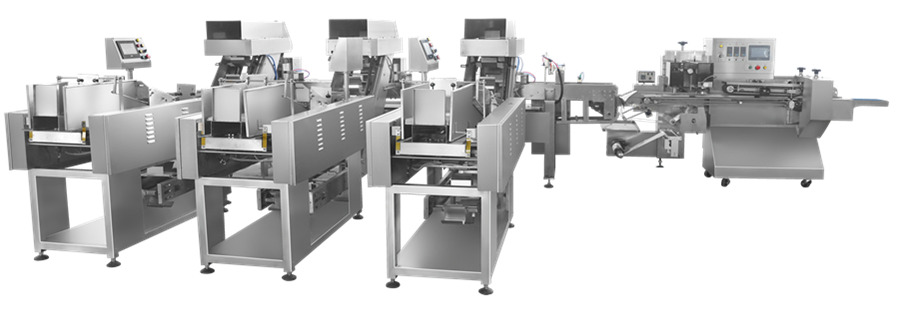

BOSD Shrink Packing Machine
Pillow-pack wrapper with a 2 m shrink tunnel for bowls, cups, cartons and multipacks.
View machine
Hanging noodle line · Noodles
A turnkey line for hanging noodles, spaghetti and cereal noodles. Three weighing stations, hoists and finishing conveyor feed a single wrapper.
Configured to your product. Film, infeed and pack count are confirmed before the order.
Built-in details
Specifications
This line is built to order: weighing range, number of stations, conveyor length and film are set for the product. Send your details and we will confirm the layout.
Applications
The same platform is configured differently for each product. These are the applications this model is most often specified for.
More machines
Next step
Send your product size, film and target speed. We will come back with a machine configuration and a quote.